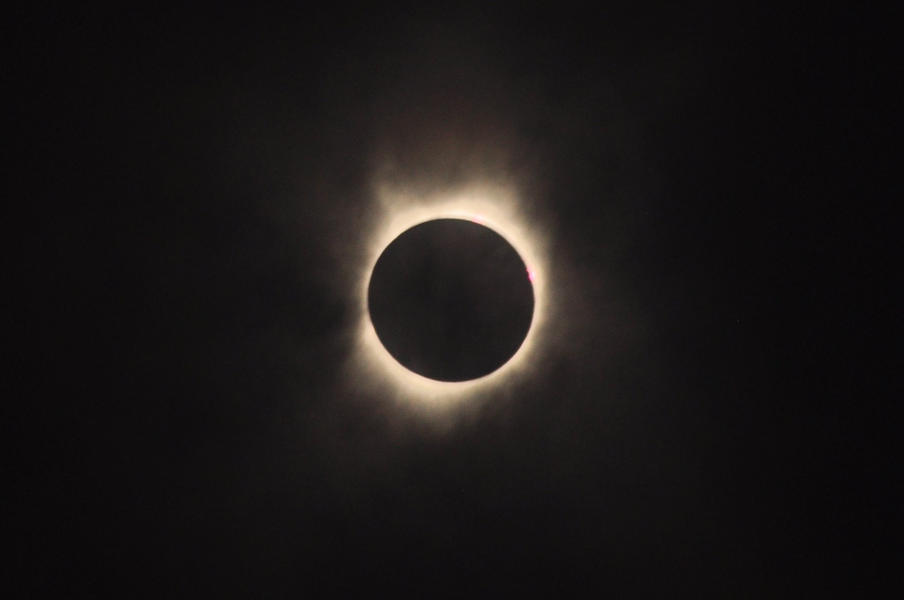
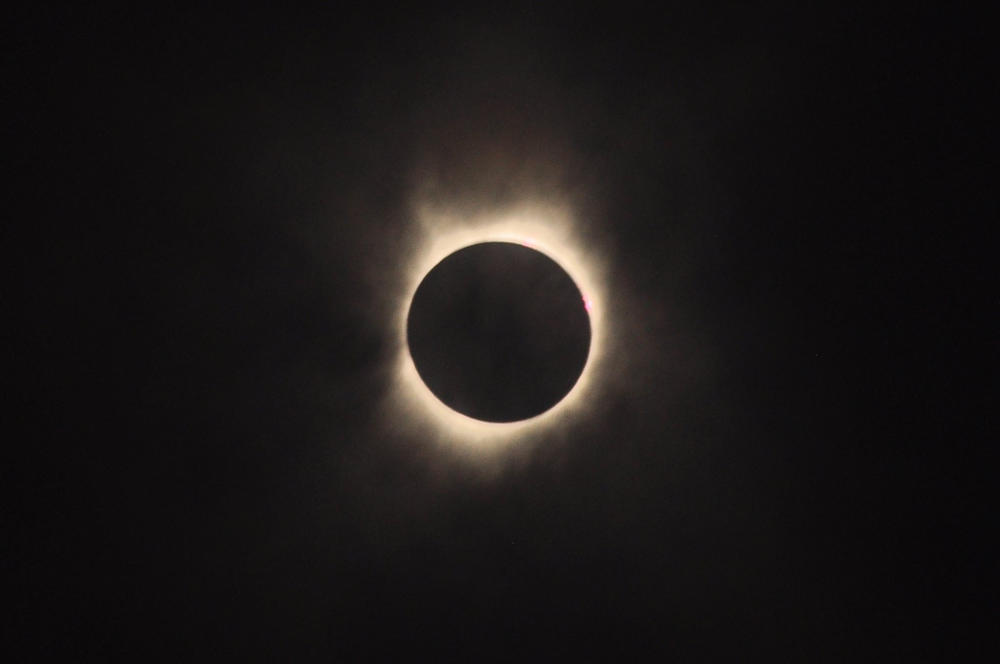
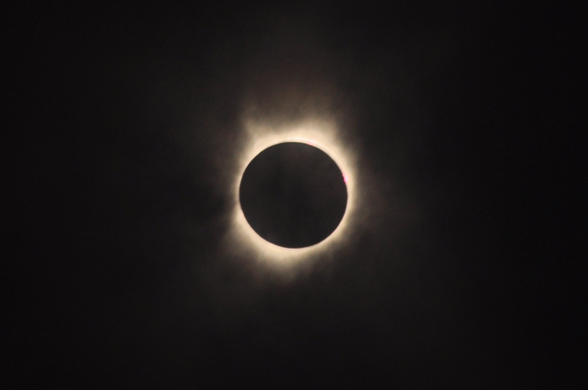
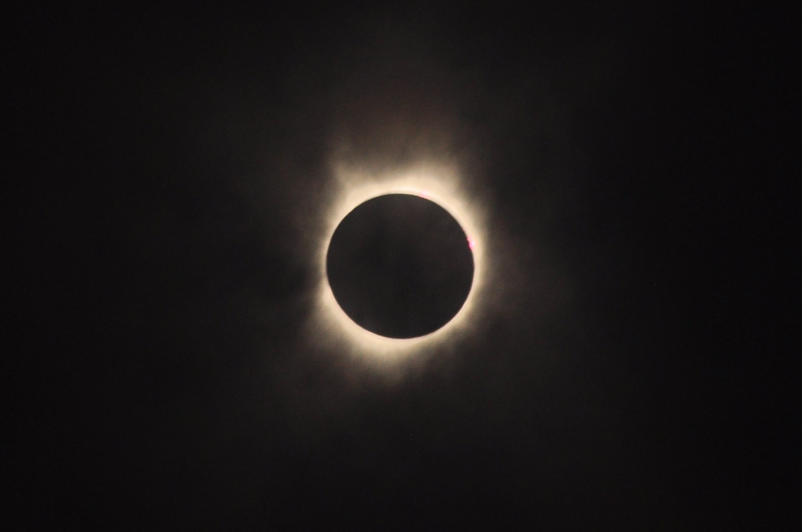

I am an observational astronomy postdoc at Steward Observatory with a broad interest in massive stars:
from how they are formed, how they evolve, and ultimately how they end their lives. My ongoing research can be
roughly divided into the study of core collapse supernovae (CCSNe), electromagnetic follow-up to gravitational wave events
and the investigation into variations in the upper end of the initial mass function (uIMF).
I recieved my PhD at Louisiana State University working with Prof. Geoff Clayton on dust formation in CCSNe. I later traveled
to UMass Amherst to work with Prof. Daniela Calzetti on the uIMF in low-metallicity dwarf galaxies using young star clusters
found in multi-filter HST imaging. This later led into the Legacy ExtraGalactic UV Survey (LEGUS), and my follow-up HST
program to observe a number of stellar clusters in nearby dwarf galaxies using STIS UV/optical spectroscopy instead of broad
filter photometric SED fitting. This allows us to expand our sample to lower metallicity and to improve on our method by
resolving diagnostic lines in the UV for young, massive stars.
Since my arrival at Steward Observatory I have been heavily involved in the day-to-day running of this program PI'd by my postdoctoral advisor Nathan Smith. Because there are varied interests in our research group, we use the over ~ 30 nights of classical and queue observing time per semester to observe all manner of transients, including CCSNe, Type Ia SNe, luminous blue variable (LBV) outbursts, and tidal disruption events (TDE). My main scientific focus in our AZTEC program is SNe with surrounding dense circumstellar material (CSM). Often these SNe exhibit narrow optical emission lines as the SN shock runs into the CSM. Moderate-to-high resolution spectra of the SN at early times can not only constrain the expansion speed and energetics of the SN itself, but can also trace the wind speed of the progenitor and therefore reconstruct the mass loss history.
A list of my publications can be found here.
My full CV can be found here.